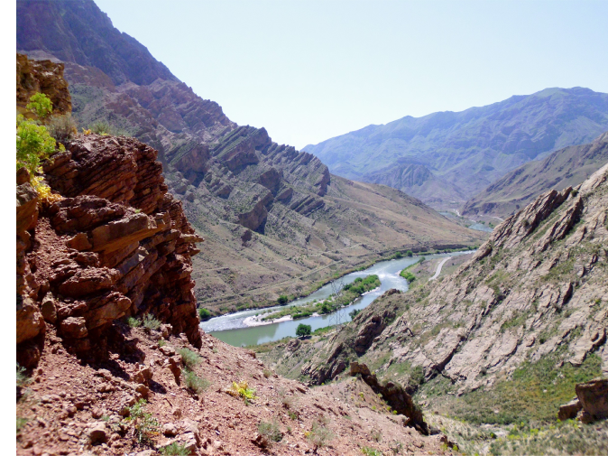

My research
I am an Earth scientist applying creative, data-driven solutions to answer fundamental questions regarding the Earth system in conjunction with the evolution of life. Besides a strong affinity for data-analysis and programming, I like to explore effective ways of communicating results by the optimization of graphical representations of data. Developing solutions to the benefit of data management/governance and open science are currently one of my prime interests.

PhD research
My PhD research was targeted at critical events in Earth History associated with biodiversity decline and ecosystem stress, a.k.a. mass extinctions. To perform my research, I visited some remote areas in Iran to sample rock layers containing traces of the greatest biotic disturbance of the last 500 million year. The investigation of this mass extinction event challenged me to combine various Earth science disciplines: sedimentology, (isotope)geochemistry and geomicrobiology. Through this I developed a particular interest to the interaction of organisms with their environment and associated feedbacks that link to the evolution of life, biogeochemical cycles and climate. Important accomplishments on these topics, developed during my PhD, are a bio-apatite oxygen isotope record and a combined carbonate-associated sulfate-S and -O isotope record covering the Permian-Triassic boundary transition. These results are interpreted to reflect dramatic seawater warming and increased primary productivity, in turn, linked to an increased areal extend of marine anoxic regions, unfolding as a feedback from the Earth system. Recently, I have focused on developing methodological strategies to reliably read biological signatures from stable isotope records by performing C isotope geochemical analysis on multiple components of the whole rock. This approach relied on statistical data processing and numerical model computations to underline the most salient features, e.g., by sub-sampling and smoothing techniques, and to quantify fluxes, thereby discerning the most probable processes governing the observed isotope trends, by use of biogeochemical box-models.

The Permian–Triassic boundary section at Aras Valley (NW Iran) on the foreground, the river Aras (or Araxes) which is the border between Azerbaijan and Iran. In the background one can see the Dorasham 2 section on Azerbaijan territory.
Martin Schobben

This work is licensed under a Creative Commons Attribution-ShareAlike 4.0 International License